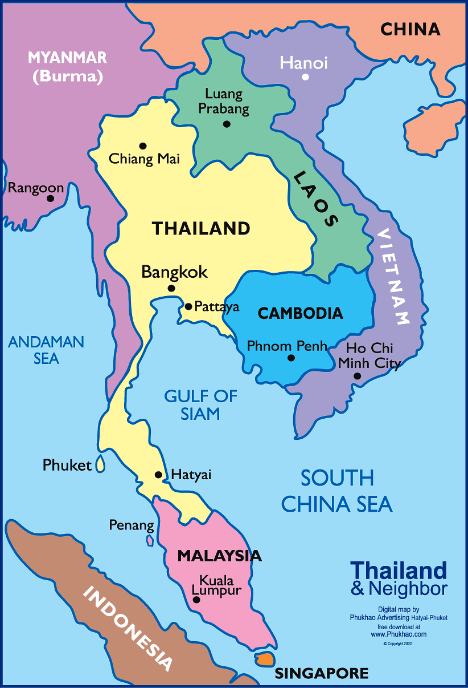

Thailand > Trafficking Overview
Trafficking in Thailand
Thailand is considered as a source, transit and a key destination for human trafficking in the Mekong region. Thai nationals, trafficked domestically and internationally for sexual exploitation, accounts for the majority of the trafficking victims identified in Thailand (1).
Many unidentified victims of human trafficking in Thailand are migrants from countries bordering Thailand, namely Cambodia, Lao, PDR and Myanmar. Foreign migrants in general along with ethnic minorities, and stateless persons in Thailand are due to language barriers, a lack of legal rights, and low economic and social status especially at risk of being trafficked (UNACT, 2014).

In a 2013 study by UNDOC, the estimated number of people in Thailand being victims of sex trafficking is approximately 5,600. Out of those about 3,750 are believed to from neighboring countries (UNDOC, 2017).
As discussed in XXX it is difficult to estimate how many individuals that are victims of human trafficking. The Global Slavery Index suggests that in Thailand 425,00 out of a total population of nearly 68 million are victims of human trafficking (GSI, 2016).
Others, such as the OMCTP (Office to Monitor and Combat Trafficking in Persons), tread more carefully when assessing the total number of trafficked people in Thailand by stating "Some of Thailand’s 65 million people and some of the estimated four million migrant workers in Thailand are forced, coerced, or defrauded into labor or sex trafficking" (U.S. State Department, 2017).